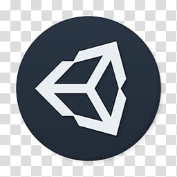

ABOUT
 Hallo allemaal en welkom op mijn website! Eerst zal ik even wat korts over mij zelf vertellen en daarna zal ik wat meer in de details gaan. Ik ben Kasper de Bruin, 20 jaar en ik kom uit Oene. Momenteel volg ik de opleiding Software Developer Niveau 4 op het Technova College in Ede(onderdeel van het ROC A12), hiervoor heb ik de BBL opleiding Medewerker Beheer ICT Niveau 3 gevolgd op het Deltion College in Zwolle. Tijdens deze opleiding op het Deltion College heb ik ruim 3,5 jaar stage gelopen bij Doorn en Van der Haar Computers in Vaassen als systeem beheerder. Buiten dit om heb ik natuurlijk ook hobby's(naast programmeren en gamen :) ), dit is vooral veel sporten en voetballen. Ik voetbal in het derde bij de club VV Oene in Oene, waar ik overigens ook scheidsrechter ben en scheidsrechter Coördinator voor de jeugd.
Hallo allemaal en welkom op mijn website! Eerst zal ik even wat korts over mij zelf vertellen en daarna zal ik wat meer in de details gaan. Ik ben Kasper de Bruin, 20 jaar en ik kom uit Oene. Momenteel volg ik de opleiding Software Developer Niveau 4 op het Technova College in Ede(onderdeel van het ROC A12), hiervoor heb ik de BBL opleiding Medewerker Beheer ICT Niveau 3 gevolgd op het Deltion College in Zwolle. Tijdens deze opleiding op het Deltion College heb ik ruim 3,5 jaar stage gelopen bij Doorn en Van der Haar Computers in Vaassen als systeem beheerder. Buiten dit om heb ik natuurlijk ook hobby's(naast programmeren en gamen :) ), dit is vooral veel sporten en voetballen. Ik voetbal in het derde bij de club VV Oene in Oene, waar ik overigens ook scheidsrechter ben en scheidsrechter Coördinator voor de jeugd.
Nu even over de technische kant van mij:), zoals eerder verteld heb ik 3,5 jaar als systeem beheerder gewerkt. Hier deed ik het vervangen, repareren en onderhouden van netwerken en server systemen. Dit kon uitlopen van een heel nieuw Wi-Fi netwerk aanleggen, een nieuwe server installeren en configureren tot het vervangen van een koelertje in een computer of iemand support geven via de mail of de telefoon. Door de ervaring die ik hier heb opgedaan heb ik een goede technische kennis en zijn mijn communicatie skills ook goed.
 Programmeren doe ik al sinds dat ik een jaar of acht was, ik heb het altijd al heel leuk gevonden en het aanpassen van software was echt mijn ding. Zo maakte ik spelletjes en websites volgens boeken en tutorials en paste ik dingen aan zodat er een andere twist aan zat. Het programmeren van websites heeft tot nu toe een beetje stilgelegen maar het programmeren van games ben ik altijd blijven doen. Zo heb ik nu kennis een goede kennis van Unity en CSharp. Momenteel ben ik ook aan het werk met een team van 5 mensen aan een game genaamd Meishin tale, wanneer je geïnteresseerd bent kun je gerust een kijkje nemen op de website:https://meishintale.com. Voor de rest kun je kijken bij mijn portofolio of op mijn GitHub/ITCHIO pagina.